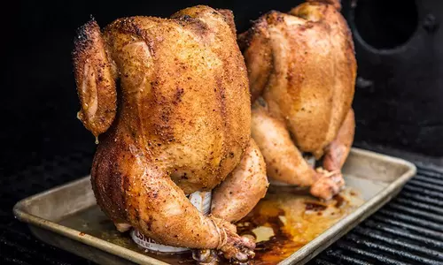

Beer Can Chicken

Brew up some major flavor. All it takes is our Chicken Rub, a can of beer, and some Traeger mesquite heat for moist & tender poultry perfection.
Ingredients:
- 1 Whole (3-5lb) chicken
- 1 Can Beer
- Traeger Chicken Rub
Steps:
- Season chicken generously with Traeger Chicken Rub, including inside the cavity.
- Tuck the wing tips back.
- When ready to cook, set Traeger to 350℉ and preheat, lid closed for 15 minutes.
- Open the can of beer and set the chicken on top of the beer. Make sure all but the bottom 1-1/2 inch of the beer can is in the cavity of the chicken. Tip: you can also place the beer can directly on the grill grates, then place the chicken on top.
- Place the entire chicken and beer can directly on the grill grate. Cook for 60 to 75 minutes, or until the internal temperature registers 165℉ in the thickest part of the breast.
- Place the entire chicken and beer can directly on the grill grate. Cook for 60 to 75 minutes, or until the internal temperature registers 165℉ in the thickest part of the breast.
- Remove from the grill and onto a sheet tray and let rest 5 to 10 minutes. Before carving, lay the bird on its back and remove the beer can. Carve and enjoy!